Parcours « ajout-rapide-tache » étape 1 (goto) : HTTP 404 : GET http://localhost:3100/_vercel/speed-insights/script.js ; console.error : Failed to load resource: the server responded with a status of 404 (Not Found) ; console.error : Refused to execute script from 'http://localhost:3100/_vercel/speed-insights/script.js' because its MIME type ('text/plain') is not executable, and strict MIME type checking is enabled. ; requête échouée : GET http://localhost:3100/_vercel/speed-insights/script.js (net::ERR_ABORTED) ; requête échouée : POST http://localhost:3100/ (net::ERR_ABORTED)
Parcours « ajout-rapide-tache » étape 5 (expect_text) : requête échouée : GET http://localhost:3100/notes?_rsc=gFW0MxFV8ywPcvsL (net::ERR_ABORTED) ; requête échouée : POST http://localhost:3100/ (net::ERR_ABORTED) ; requête échouée : GET http://localhost:3100/nutrition/journal?_rsc=Up4R57oMmbCZ9LwJ (net::ERR_ABORTED) ; requête échouée : POST http://localhost:3100/ (net::ERR_ABORTED)
Parcours « ajout-rapide-tache » étape 6 (reload) : requête échouée : GET http://localhost:3100/notes?_rsc=w09g-vogoJZODC4M (net::ERR_ABORTED) ; HTTP 404 : GET http://localhost:3100/_vercel/speed-insights/script.js ; console.error : Failed to load resource: the server responded with a status of 404 (Not Found) ; console.error : Refused to execute script from 'http://localhost:3100/_vercel/speed-insights/script.js' because its MIME type ('text/html') is not executable, and strict MIME type checking is enabled. ; requête échouée : GET http://localhost:3100/_vercel/speed-insights/script.js (net::ERR_ABORTED) ; requête échouée : POST http://localhost:3100/ (net::ERR_ABORTED)
Parcours « cas-limites-ajout » étape 1 (goto) : HTTP 404 : GET http://localhost:3100/_vercel/speed-insights/script.js ; console.error : Failed to load resource: the server responded with a status of 404 (Not Found) ; console.error : Refused to execute script from 'http://localhost:3100/_vercel/speed-insights/script.js' because its MIME type ('text/plain') is not executable, and strict MIME type checking is enabled. ; requête échouée : GET http://localhost:3100/_vercel/speed-insights/script.js (net::ERR_ABORTED) ; requête échouée : GET http://localhost:3100/notes?_rsc=w09g-vogoJZODC4M (net::ERR_ABORTED)
Parcours « cas-limites-ajout » étape 10 (screenshot) : requête échouée : GET http://localhost:3100/notes?_rsc=gFW0MxFV8ywPcvsL (net::ERR_ABORTED) ; requête échouée : GET http://localhost:3100/nutrition/journal?_rsc=bB5CaNtLRAXRuMIr (net::ERR_ABORTED) ; requête échouée : POST http://localhost:3100/ (net::ERR_ABORTED)
Parcours « cocher-tache » étape 1 (goto) : HTTP 404 : GET http://localhost:3100/_vercel/speed-insights/script.js ; console.error : Failed to load resource: the server responded with a status of 404 (Not Found) ; console.error : Refused to execute script from 'http://localhost:3100/_vercel/speed-insights/script.js' because its MIME type ('text/plain') is not executable, and strict MIME type checking is enabled. ; requête échouée : GET http://localhost:3100/_vercel/speed-insights/script.js (net::ERR_ABORTED) ; requête échouée : GET http://localhost:3100/notes?_rsc=w09g-vogoJZODC4M (net::ERR_ABORTED) ; requête échouée : POST http://localhost:3100/ (net::ERR_ABORTED) ; requête échouée : POST http://localhost:3100/ (net::ERR_ABORTED)
Parcours « cocher-tache » étape 5 (reload) : requête échouée : GET http://localhost:3100/notes?_rsc=w09g-vogoJZODC4M (net::ERR_ABORTED) ; HTTP 404 : GET http://localhost:3100/_vercel/speed-insights/script.js ; console.error : Failed to load resource: the server responded with a status of 404 (Not Found) ; console.error : Refused to execute script from 'http://localhost:3100/_vercel/speed-insights/script.js' because its MIME type ('text/html') is not executable, and strict MIME type checking is enabled. ; requête échouée : GET http://localhost:3100/_vercel/speed-insights/script.js (net::ERR_ABORTED) ; requête échouée : POST http://localhost:3100/ (net::ERR_ABORTED) ; requête échouée : POST http://localhost:3100/ (net::ERR_ABORTED) ; requête échouée : POST http://localhost:3100/ (net::ERR_ABORTED)
Parcours « evenement » étape 1 (goto) : HTTP 404 : GET http://localhost:3100/_vercel/speed-insights/script.js ; console.error : Failed to load resource: the server responded with a status of 404 (Not Found) ; console.error : Refused to execute script from 'http://localhost:3100/_vercel/speed-insights/script.js' because its MIME type ('text/plain') is not executable, and strict MIME type checking is enabled. ; requête échouée : GET http://localhost:3100/_vercel/speed-insights/script.js (net::ERR_ABORTED) ; requête échouée : GET http://localhost:3100/notes?_rsc=w09g-vogoJZODC4M (net::ERR_ABORTED) ; requête échouée : POST http://localhost:3100/ (net::ERR_ABORTED) ; requête échouée : POST http://localhost:3100/ (net::ERR_ABORTED)
Parcours « evenement » étape 7 (wait) : requête échouée : GET http://localhost:3100/notes?_rsc=w09g-vogoJZODC4M (net::ERR_ABORTED) ; requête échouée : POST http://localhost:3100/ (net::ERR_ABORTED) ; requête échouée : POST http://localhost:3100/ (net::ERR_ABORTED) ; requête échouée : GET http://localhost:3100/?_rsc=BtbPFF9wRKKmQ2U_ (net::ERR_ABORTED)
Parcours « evenement » étape 9 (reload) : HTTP 404 : GET http://localhost:3100/_vercel/speed-insights/script.js ; console.error : Failed to load resource: the server responded with a status of 404 (Not Found) ; console.error : Refused to execute script from 'http://localhost:3100/_vercel/speed-insights/script.js' because its MIME type ('text/html') is not executable, and strict MIME type checking is enabled. ; requête échouée : GET http://localhost:3100/_vercel/speed-insights/script.js (net::ERR_ABORTED) ; requête échouée : GET http://localhost:3100/notes?_rsc=w09g-vogoJZODC4M (net::ERR_ABORTED) ; requête échouée : POST http://localhost:3100/ (net::ERR_ABORTED)
Parcours « fab-et-navigation » étape 1 (goto) : HTTP 404 : GET http://localhost:3100/_vercel/speed-insights/script.js ; console.error : Failed to load resource: the server responded with a status of 404 (Not Found) ; console.error : Refused to execute script from 'http://localhost:3100/_vercel/speed-insights/script.js' because its MIME type ('text/plain') is not executable, and strict MIME type checking is enabled. ; requête échouée : GET http://localhost:3100/_vercel/speed-insights/script.js (net::ERR_ABORTED) ; requête échouée : GET http://localhost:3100/notes?_rsc=w09g-vogoJZODC4M (net::ERR_ABORTED) ; requête échouée : POST http://localhost:3100/ (net::ERR_ABORTED)
Parcours « fab-et-navigation » étape 8 (goto) : HTTP 404 : GET http://localhost:3100/_vercel/speed-insights/script.js ; console.error : Failed to load resource: the server responded with a status of 404 (Not Found) ; console.error : Refused to execute script from 'http://localhost:3100/_vercel/speed-insights/script.js' because its MIME type ('text/html') is not executable, and strict MIME type checking is enabled. ; requête échouée : GET http://localhost:3100/_vercel/speed-insights/script.js (net::ERR_ABORTED) ; requête échouée : GET http://localhost:3100/notes?_rsc=15e7mRwwwrE2r08K (net::ERR_ABORTED) ; requête échouée : POST http://localhost:3100/agenda (net::ERR_ABORTED)
Parcours « fab-et-navigation » étape 9 (back) : requête échouée : GET http://localhost:3100/notes?_rsc=w09g-vogoJZODC4M (net::ERR_ABORTED) ; HTTP 404 : GET http://localhost:3100/_vercel/speed-insights/script.js ; console.error : Failed to load resource: the server responded with a status of 404 (Not Found) ; console.error : Refused to execute script from 'http://localhost:3100/_vercel/speed-insights/script.js' because its MIME type ('text/html') is not executable, and strict MIME type checking is enabled. ; requête échouée : GET http://localhost:3100/_vercel/speed-insights/script.js (net::ERR_ABORTED)
Parcours « liste-vide » étape 1 (goto) : HTTP 404 : GET http://localhost:3100/_vercel/speed-insights/script.js ; console.error : Failed to load resource: the server responded with a status of 404 (Not Found) ; console.error : Refused to execute script from 'http://localhost:3100/_vercel/speed-insights/script.js' because its MIME type ('text/plain') is not executable, and strict MIME type checking is enabled. ; requête échouée : GET http://localhost:3100/_vercel/speed-insights/script.js (net::ERR_ABORTED) ; requête échouée : POST http://localhost:3100/ (net::ERR_ABORTED)
Parcours « saisie-naturelle » étape 1 (goto) : HTTP 404 : GET http://localhost:3100/_vercel/speed-insights/script.js ; console.error : Failed to load resource: the server responded with a status of 404 (Not Found) ; console.error : Refused to execute script from 'http://localhost:3100/_vercel/speed-insights/script.js' because its MIME type ('text/plain') is not executable, and strict MIME type checking is enabled. ; requête échouée : GET http://localhost:3100/_vercel/speed-insights/script.js (net::ERR_ABORTED) ; requête échouée : POST http://localhost:3100/ (net::ERR_ABORTED)
1. goto ouvrir Aujourd'hui — anomalie ⚠ HTTP 404 : GET http://localhost:3100/_vercel/speed-insights/script.js ⚠ console.error : Failed to load resource: the server responded with a status of 404 (Not Found) ⚠ console.error : Refused to execute script from 'http://localhost:3100/_vercel/speed-insights/script.js' because its MIME type ('text/plain') is not executable, and strict MIME type checking is enabled. ⚠ requête échouée : GET http://localhost:3100/_vercel/speed-insights/script.js (net::ERR_ABORTED) ⚠ requête échouée : POST http://localhost:3100/ (net::ERR_ABORTED)2. expect_text http://localhost:3100/ — ok
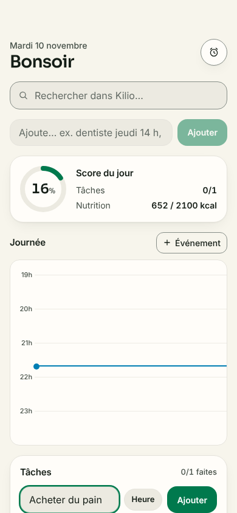
3. fill role=textbox[name=/nouvelle tâche pour aujourd/i] — ok4. click ajouter la tâche — ok
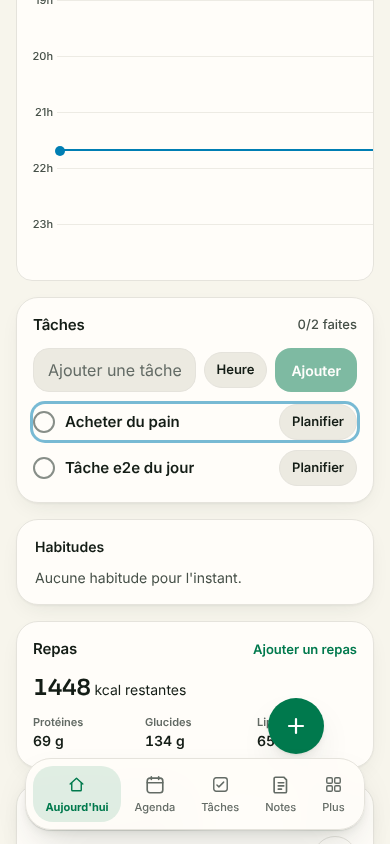
5. expect_text http://localhost:3100/ — anomalie ⚠ requête échouée : GET http://localhost:3100/notes?_rsc=gFW0MxFV8ywPcvsL (net::ERR_ABORTED) ⚠ requête échouée : POST http://localhost:3100/ (net::ERR_ABORTED) ⚠ requête échouée : GET http://localhost:3100/nutrition/journal?_rsc=Up4R57oMmbCZ9LwJ (net::ERR_ABORTED) ⚠ requête échouée : POST http://localhost:3100/ (net::ERR_ABORTED)6. reload persistance — anomalie ⚠ requête échouée : GET http://localhost:3100/notes?_rsc=w09g-vogoJZODC4M (net::ERR_ABORTED) ⚠ HTTP 404 : GET http://localhost:3100/_vercel/speed-insights/script.js ⚠ console.error : Failed to load resource: the server responded with a status of 404 (Not Found) ⚠ console.error : Refused to execute script from 'http://localhost:3100/_vercel/speed-insights/script.js' because its MIME type ('text/html') is not executable, and strict MIME type checking is enabled. ⚠ requête échouée : GET http://localhost:3100/_vercel/speed-insights/script.js (net::ERR_ABORTED) ⚠ requête échouée : POST http://localhost:3100/ (net::ERR_ABORTED)7. expect_text http://localhost:3100/ — ok
cas-limites-ajout
1. goto http://localhost:3100/ — anomalie ⚠ HTTP 404 : GET http://localhost:3100/_vercel/speed-insights/script.js ⚠ console.error : Failed to load resource: the server responded with a status of 404 (Not Found) ⚠ console.error : Refused to execute script from 'http://localhost:3100/_vercel/speed-insights/script.js' because its MIME type ('text/plain') is not executable, and strict MIME type checking is enabled. ⚠ requête échouée : GET http://localhost:3100/_vercel/speed-insights/script.js (net::ERR_ABORTED) ⚠ requête échouée : GET http://localhost:3100/notes?_rsc=w09g-vogoJZODC4M (net::ERR_ABORTED)
3. fill role=textbox[name=/nouvelle tâche pour aujourd/i] — ok4. click role=form[name=/ajouter une tâche à aujourd/i] >> role=button[name=/^ajouter$/i] — ok5. wait http://localhost:3100/ — ok
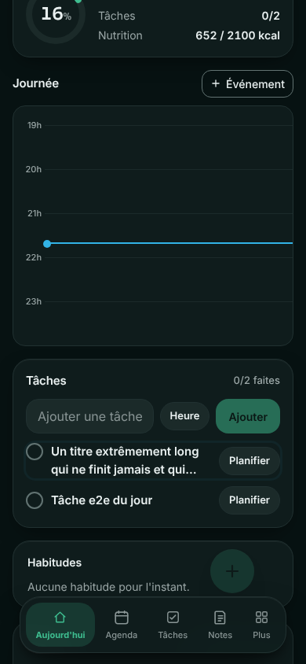
6. screenshot titre très long — anomalie ⚠ requête échouée : GET http://localhost:3100/notes?_rsc=gFW0MxFV8ywPcvsL (net::ERR_ABORTED) ⚠ requête échouée : POST http://localhost:3100/ (net::ERR_ABORTED)
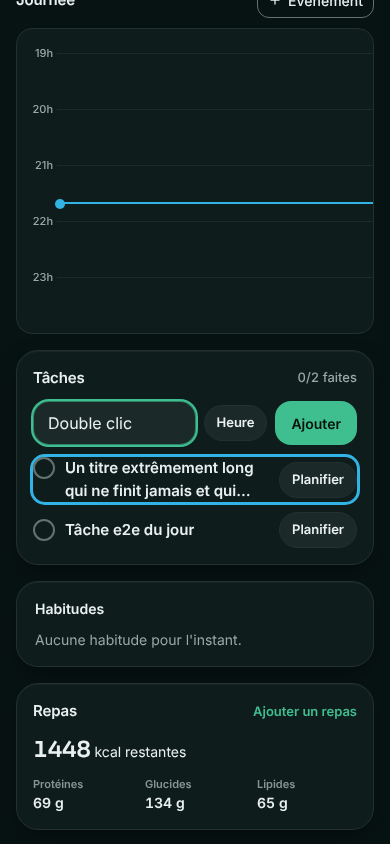
7. fill role=textbox[name=/nouvelle tâche pour aujourd/i] — anomalie ⚠ requête échouée : GET http://localhost:3100/nutrition/journal?_rsc=Up4R57oMmbCZ9LwJ (net::ERR_ABORTED) ⚠ requête échouée : POST http://localhost:3100/ (net::ERR_ABORTED)
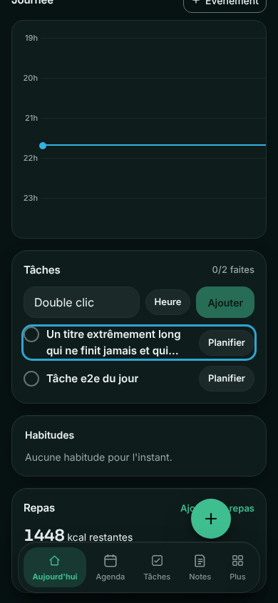
8. dblclick double clic : un seul ajout attendu — ok
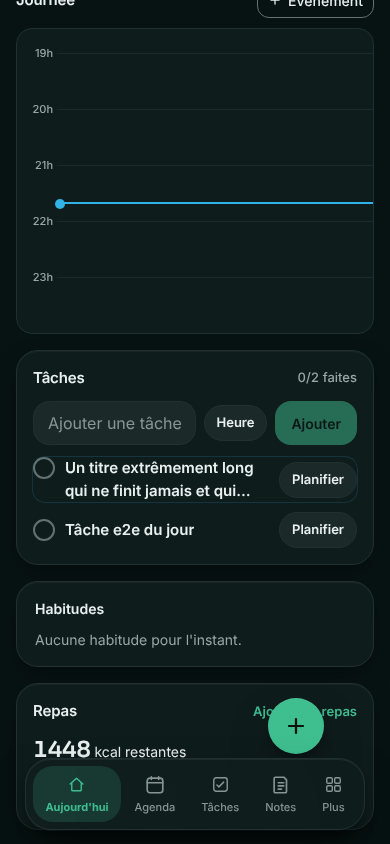
9. wait http://localhost:3100/ — ok
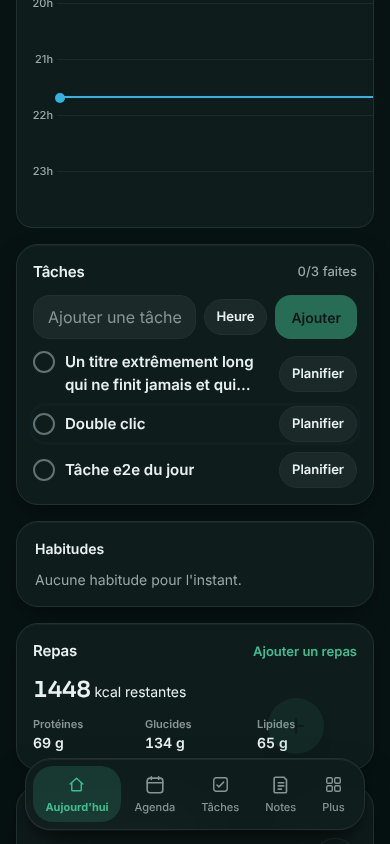
10. screenshot http://localhost:3100/ — anomalie ⚠ requête échouée : GET http://localhost:3100/notes?_rsc=gFW0MxFV8ywPcvsL (net::ERR_ABORTED) ⚠ requête échouée : GET http://localhost:3100/nutrition/journal?_rsc=bB5CaNtLRAXRuMIr (net::ERR_ABORTED) ⚠ requête échouée : POST http://localhost:3100/ (net::ERR_ABORTED)
cocher-tache
1. goto http://localhost:3100/ — anomalie ⚠ HTTP 404 : GET http://localhost:3100/_vercel/speed-insights/script.js ⚠ console.error : Failed to load resource: the server responded with a status of 404 (Not Found) ⚠ console.error : Refused to execute script from 'http://localhost:3100/_vercel/speed-insights/script.js' because its MIME type ('text/plain') is not executable, and strict MIME type checking is enabled. ⚠ requête échouée : GET http://localhost:3100/_vercel/speed-insights/script.js (net::ERR_ABORTED) ⚠ requête échouée : GET http://localhost:3100/notes?_rsc=w09g-vogoJZODC4M (net::ERR_ABORTED) ⚠ requête échouée : POST http://localhost:3100/ (net::ERR_ABORTED) ⚠ requête échouée : POST http://localhost:3100/ (net::ERR_ABORTED)
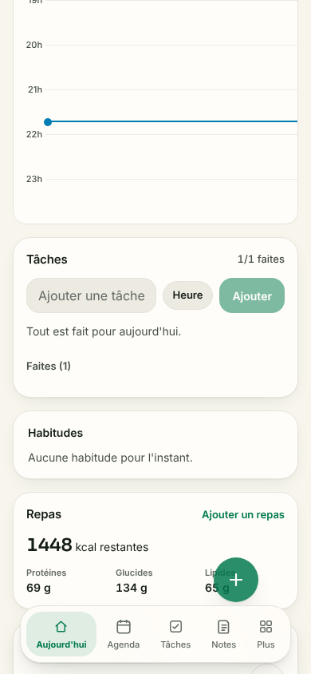
2. click cocher la tâche du jour — anomalie ⚠ requête échouée : GET http://localhost:3100/nutrition/journal?_rsc=jgbicBYTXkMX15VX (net::ERR_ABORTED)3. wait http://localhost:3100/ — anomalie ⚠ requête échouée : GET http://localhost:3100/nutrition/journal?_rsc=bB5CaNtLRAXRuMIr (net::ERR_ABORTED) ⚠ requête échouée : GET http://localhost:3100/notes?_rsc=gFW0MxFV8ywPcvsL (net::ERR_ABORTED) ⚠ requête échouée : POST http://localhost:3100/ (net::ERR_ABORTED)
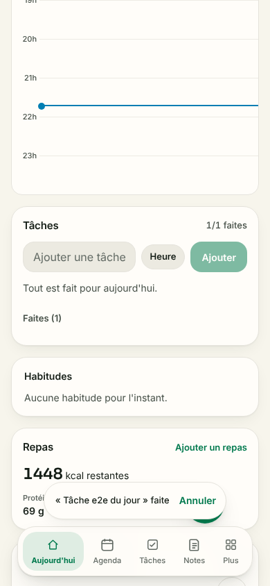
4. screenshot état après coche (score) — anomalie ⚠ requête échouée : POST http://localhost:3100/ (net::ERR_ABORTED)5. reload http://localhost:3100/ — anomalie ⚠ requête échouée : GET http://localhost:3100/notes?_rsc=w09g-vogoJZODC4M (net::ERR_ABORTED) ⚠ HTTP 404 : GET http://localhost:3100/_vercel/speed-insights/script.js ⚠ console.error : Failed to load resource: the server responded with a status of 404 (Not Found) ⚠ console.error : Refused to execute script from 'http://localhost:3100/_vercel/speed-insights/script.js' because its MIME type ('text/html') is not executable, and strict MIME type checking is enabled. ⚠ requête échouée : GET http://localhost:3100/_vercel/speed-insights/script.js (net::ERR_ABORTED) ⚠ requête échouée : POST http://localhost:3100/ (net::ERR_ABORTED) ⚠ requête échouée : POST http://localhost:3100/ (net::ERR_ABORTED) ⚠ requête échouée : POST http://localhost:3100/ (net::ERR_ABORTED)
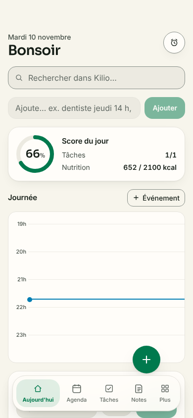
6. expect_text persistance : la tâche faite est repliée sous « 1/1 faites » — ok
evenement
1. goto http://localhost:3100/ — anomalie ⚠ HTTP 404 : GET http://localhost:3100/_vercel/speed-insights/script.js ⚠ console.error : Failed to load resource: the server responded with a status of 404 (Not Found) ⚠ console.error : Refused to execute script from 'http://localhost:3100/_vercel/speed-insights/script.js' because its MIME type ('text/plain') is not executable, and strict MIME type checking is enabled. ⚠ requête échouée : GET http://localhost:3100/_vercel/speed-insights/script.js (net::ERR_ABORTED) ⚠ requête échouée : GET http://localhost:3100/notes?_rsc=w09g-vogoJZODC4M (net::ERR_ABORTED) ⚠ requête échouée : POST http://localhost:3100/ (net::ERR_ABORTED) ⚠ requête échouée : POST http://localhost:3100/ (net::ERR_ABORTED)2. expect_text http://localhost:3100/ — ok
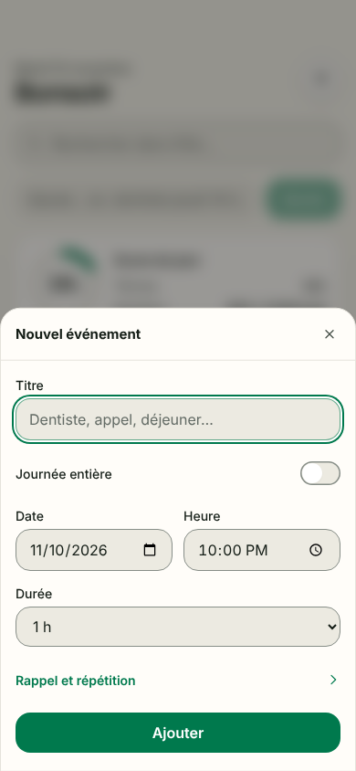
3. click ouvrir le formulaire d'événement — ok
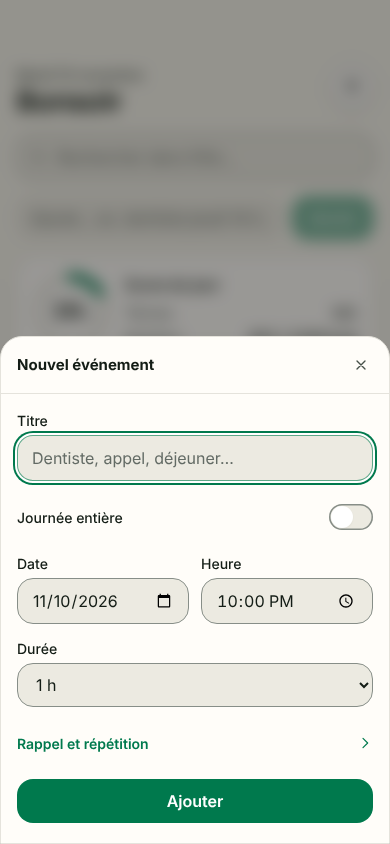
4. screenshot formulaire — ok5. fill role=textbox[name=/titre/i] — ok
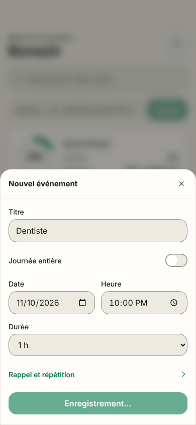
6. click role=dialog >> role=button[name=/^ajouter$/i] — ok7. wait http://localhost:3100/ — anomalie ⚠ requête échouée : GET http://localhost:3100/notes?_rsc=w09g-vogoJZODC4M (net::ERR_ABORTED) ⚠ requête échouée : POST http://localhost:3100/ (net::ERR_ABORTED) ⚠ requête échouée : POST http://localhost:3100/ (net::ERR_ABORTED) ⚠ requête échouée : GET http://localhost:3100/?_rsc=BtbPFF9wRKKmQ2U_ (net::ERR_ABORTED)
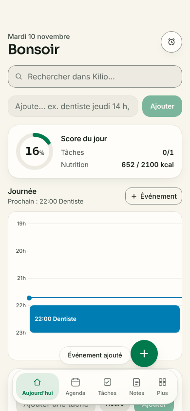
8. expect_text http://localhost:3100/ — ok9. reload http://localhost:3100/ — anomalie ⚠ HTTP 404 : GET http://localhost:3100/_vercel/speed-insights/script.js ⚠ console.error : Failed to load resource: the server responded with a status of 404 (Not Found) ⚠ console.error : Refused to execute script from 'http://localhost:3100/_vercel/speed-insights/script.js' because its MIME type ('text/html') is not executable, and strict MIME type checking is enabled. ⚠ requête échouée : GET http://localhost:3100/_vercel/speed-insights/script.js (net::ERR_ABORTED) ⚠ requête échouée : GET http://localhost:3100/notes?_rsc=w09g-vogoJZODC4M (net::ERR_ABORTED) ⚠ requête échouée : POST http://localhost:3100/ (net::ERR_ABORTED)
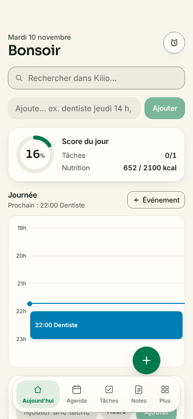
10. expect_text http://localhost:3100/ — ok
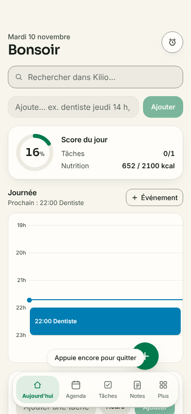
11. back retour arrière — ok
fab-et-navigation
1. goto http://localhost:3100/ — anomalie ⚠ HTTP 404 : GET http://localhost:3100/_vercel/speed-insights/script.js ⚠ console.error : Failed to load resource: the server responded with a status of 404 (Not Found) ⚠ console.error : Refused to execute script from 'http://localhost:3100/_vercel/speed-insights/script.js' because its MIME type ('text/plain') is not executable, and strict MIME type checking is enabled. ⚠ requête échouée : GET http://localhost:3100/_vercel/speed-insights/script.js (net::ERR_ABORTED) ⚠ requête échouée : GET http://localhost:3100/notes?_rsc=w09g-vogoJZODC4M (net::ERR_ABORTED) ⚠ requête échouée : POST http://localhost:3100/ (net::ERR_ABORTED)
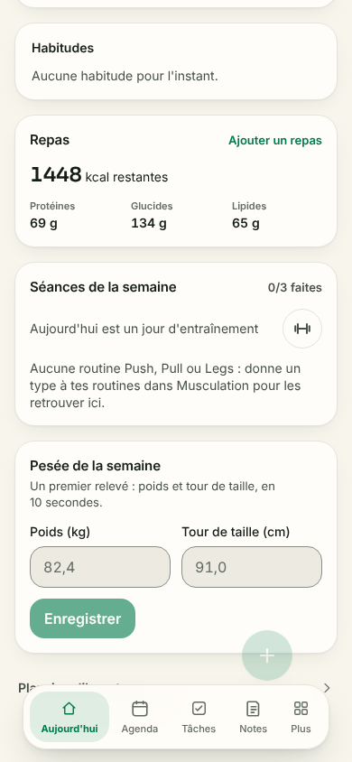
2. scroll défiler : sections du bas — anomalie ⚠ requête échouée : GET http://localhost:3100/nutrition/journal?_rsc=jgbicBYTXkMX15VX (net::ERR_ABORTED)
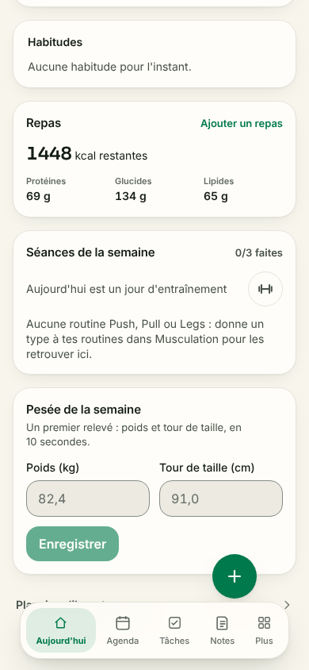
3. screenshot http://localhost:3100/ — ok
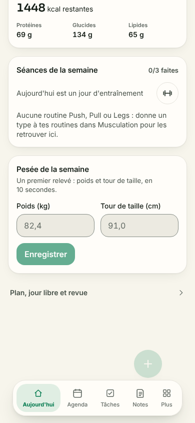
4. scroll http://localhost:3100/ — ok
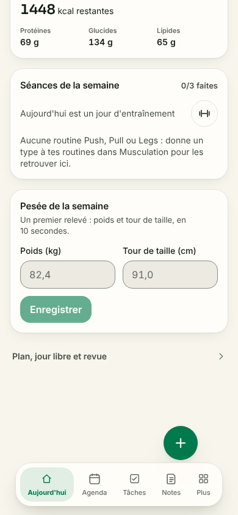
5. screenshot bas de page (FAB + barre du bas) — ok
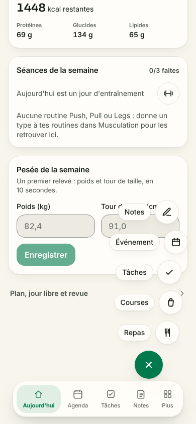
6. click FAB — ok7. screenshot http://localhost:3100/ — ok
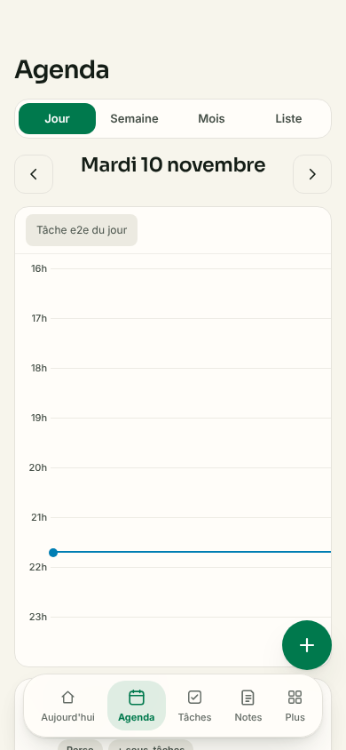
8. goto http://localhost:3100/agenda — anomalie ⚠ HTTP 404 : GET http://localhost:3100/_vercel/speed-insights/script.js ⚠ console.error : Failed to load resource: the server responded with a status of 404 (Not Found) ⚠ console.error : Refused to execute script from 'http://localhost:3100/_vercel/speed-insights/script.js' because its MIME type ('text/html') is not executable, and strict MIME type checking is enabled. ⚠ requête échouée : GET http://localhost:3100/_vercel/speed-insights/script.js (net::ERR_ABORTED) ⚠ requête échouée : GET http://localhost:3100/notes?_rsc=15e7mRwwwrE2r08K (net::ERR_ABORTED) ⚠ requête échouée : POST http://localhost:3100/agenda (net::ERR_ABORTED)9. back retour vers Aujourd'hui — anomalie ⚠ requête échouée : GET http://localhost:3100/notes?_rsc=w09g-vogoJZODC4M (net::ERR_ABORTED) ⚠ HTTP 404 : GET http://localhost:3100/_vercel/speed-insights/script.js ⚠ console.error : Failed to load resource: the server responded with a status of 404 (Not Found) ⚠ console.error : Refused to execute script from 'http://localhost:3100/_vercel/speed-insights/script.js' because its MIME type ('text/html') is not executable, and strict MIME type checking is enabled. ⚠ requête échouée : GET http://localhost:3100/_vercel/speed-insights/script.js (net::ERR_ABORTED)
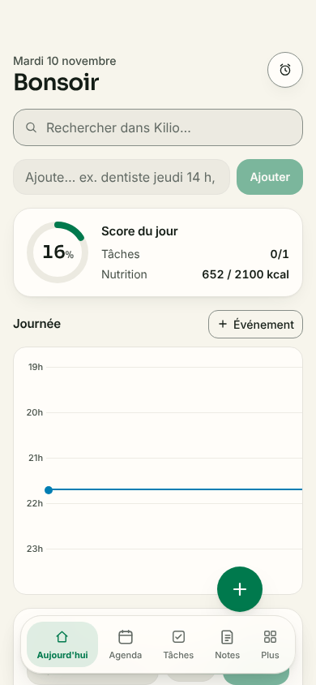
10. screenshot http://localhost:3100/ — ok
liste-vide
1. goto http://localhost:3100/ — anomalie ⚠ HTTP 404 : GET http://localhost:3100/_vercel/speed-insights/script.js ⚠ console.error : Failed to load resource: the server responded with a status of 404 (Not Found) ⚠ console.error : Refused to execute script from 'http://localhost:3100/_vercel/speed-insights/script.js' because its MIME type ('text/plain') is not executable, and strict MIME type checking is enabled. ⚠ requête échouée : GET http://localhost:3100/_vercel/speed-insights/script.js (net::ERR_ABORTED) ⚠ requête échouée : POST http://localhost:3100/ (net::ERR_ABORTED)
5. screenshot plus aucune tâche à faire : état vide ? — ok
saisie-naturelle
1. goto http://localhost:3100/ — anomalie ⚠ HTTP 404 : GET http://localhost:3100/_vercel/speed-insights/script.js ⚠ console.error : Failed to load resource: the server responded with a status of 404 (Not Found) ⚠ console.error : Refused to execute script from 'http://localhost:3100/_vercel/speed-insights/script.js' because its MIME type ('text/plain') is not executable, and strict MIME type checking is enabled. ⚠ requête échouée : GET http://localhost:3100/_vercel/speed-insights/script.js (net::ERR_ABORTED) ⚠ requête échouée : POST http://localhost:3100/ (net::ERR_ABORTED)
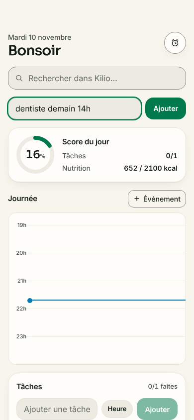
2. fill role=textbox[name=/en une phrase/i] — ok3. wait http://localhost:3100/ — ok4. screenshot aperçu de la saisie — ok
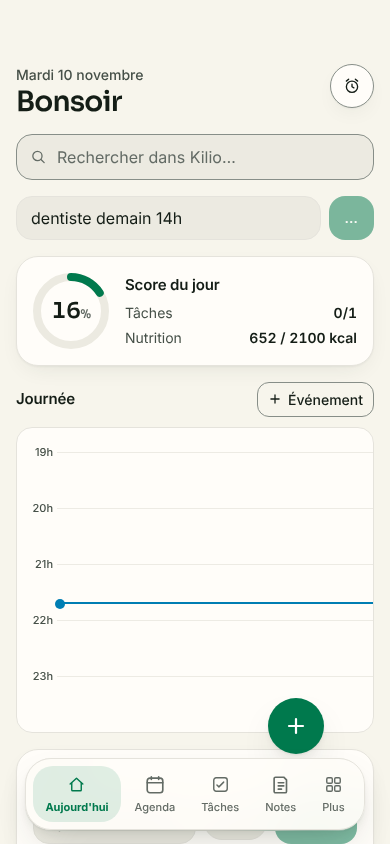
5. click role=form[name=/langage naturel/i] >> role=button[name=/^ajouter$/i] — ok
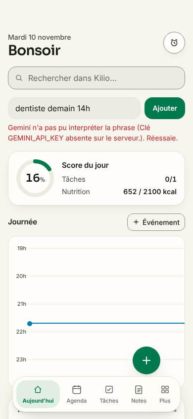
6. wait http://localhost:3100/ — ok7. screenshot résultat — ok